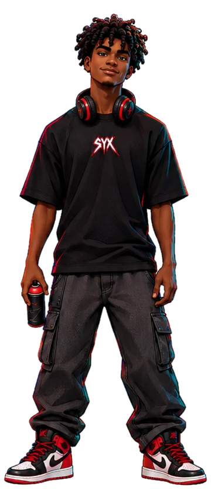
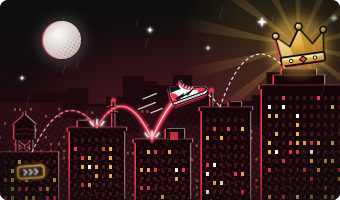
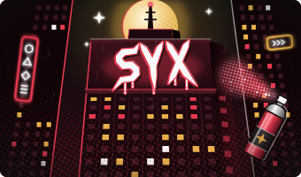

Jordans Neon
LendárioCano alto, vermelho e preto. Deixam um rastro de luz a cada salto.

Grafiteiro Hacker Nível 16
Syx cresceu em Nova Aurora, a cidade onde os letreiros nunca apagam.
De dia é só mais um garoto de fone no pescoço.
De noite corre pelos telhados e deixa sua marca nos muros mais altos.
Role para conhecer o herói
Cabelo cacheado
Fone neon
Logo SYX
Spray de grafite
Calça cargo
Jordans
Agilidade 92
Estilo 99
Hacking 81
Furtividade 75
Força 64
Salto Neon
Pula de prédio em prédio e deixa um rastro de luz.
Tag Fantasma
Faz grafites que só aparecem quando a cidade apaga.
Ouvido Biônico
Escuta os drones de patrulha a três quarteirões.
Invasão Rápida
Abre qualquer porta eletrônica em segundos.
Cano alto, vermelho e preto. Deixam um rastro de luz a cada salto.
Cancela o barulho da cidade e capta o rádio dos drones.
Camiseta preta com a logo da própria marca do Syx.
Tinta neon que brilha no escuro. Sempre no bolso.

Atravessou Nova Aurora inteira sem tocar o chão.

Pintou a logo SYX no topo da Torre Aurora.
Precisa de ajuda em uma missão ou quer entrar para a crew do Syx? Chame a guilda em um dos canais abaixo.